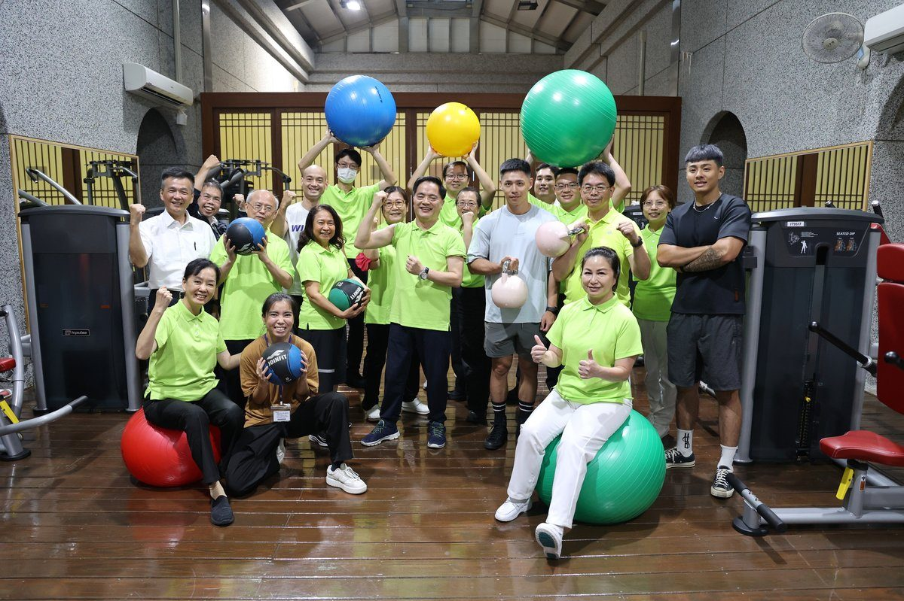

全臺唯一24小時院內健身房 花蓮慈院獲運動企業認證

可樂電子報小編/編輯
花蓮慈濟醫院打造全臺唯一全年無休、24小時免費開放的院內運動中心，醫師、護理師與行政同仁不受班別限制，換班或下班後隨時都能運動。今年運動部首度開放醫療院所申請運動企業認證，花蓮慈院以多年推動運動社團、院內健身房、路跑與蔬食健康的成果，成為花蓮第一家獲得認證的醫療院所。

今年適逢花蓮慈院啟業40週年，院方推動員工運動的歷史至少可追溯30年，自1995年4月舉辦第一屆「精舍路跑」以來從未中斷。目前院內有山海健走社、籃球社、有氧運動社、體態救星社，近年再加入羽球社與匹克球社；體態救星社參與人次從2024年579人次，2025年躍升至1,678人次，成長近3倍，成為院內最大健康社團。

2024年員工運動中心揭幕，名稱由員工票選，取「享瘦達到長壽，歡喜運動、燃燒脂肪」之意，定名「壽喜燒」。這座健身房設有具證照的專屬運動指導員駐場管理，更是全國唯一提供365日全年無休、每日24小時免費開放的同仁專屬運動空間，讓值班與輪班的同仁能更彈性規劃運動時間。

成果直接反映在使用人數，從初期每月約1,500人次，今年已達每月2,500人次以上，以醫師、護理師與行政人員為大宗，其中護理師比例最高，各項滿意度調查都超過4分（滿分5分）。院方表示，24小時開放的設計讓大夜與輪班同仁不必遷就時間，也讓「運動融入工作」不只是口號。

除了日常運動，院部主管帶頭規劃的院慶體育賽事是各單位每年的重頭戲。院方每年舉辦「跑回心靈的故鄉—靜思精舍」8.2公里路跑，開放社區民眾免費報名並廣發獎金；同仁也自發組隊參加太平洋馬拉松，運動醫學中心主任劉冠麟醫師今年更召集醫護同仁投入花蓮縣龍舟競賽，把醫療團隊帶進社區。

運動企業的推動也與健康促進、永續行動緊密扣連。院方長期推動蔬食，今年更升級員工午餐菜色，營養科每年舉辦全院減重比賽，由營養師設計蔬食搭配運動，並以科學化數據掌握員工健康狀況；運動醫學中心推動的「運動照護永續行動」呼應聯合國永續發展目標中的健康與福祉，2025年獲臺灣永續行動獎金獎肯定。
運動部首度開放醫療院所申請認證，花蓮慈院以長期推動員工健康促進的成果拿下「運動企業」認證，12日由副院長吳彬安代表受獎。吳彬安表示，院內員工超過3,000人，運動與健康促進須靠運動醫學中心、職業安全衛生室、營養科、總務室、員工福利委員小組與永續辦公室跨單位合作，未來將邀請花東其他醫療院所與社區一起動起來。
📸 更多現場紀實影像


🌟 掌握花蓮在地第一手資訊・歡迎訂閱追蹤
深度紀實報導、在地精采影音專題，第一時間接收最新消息！